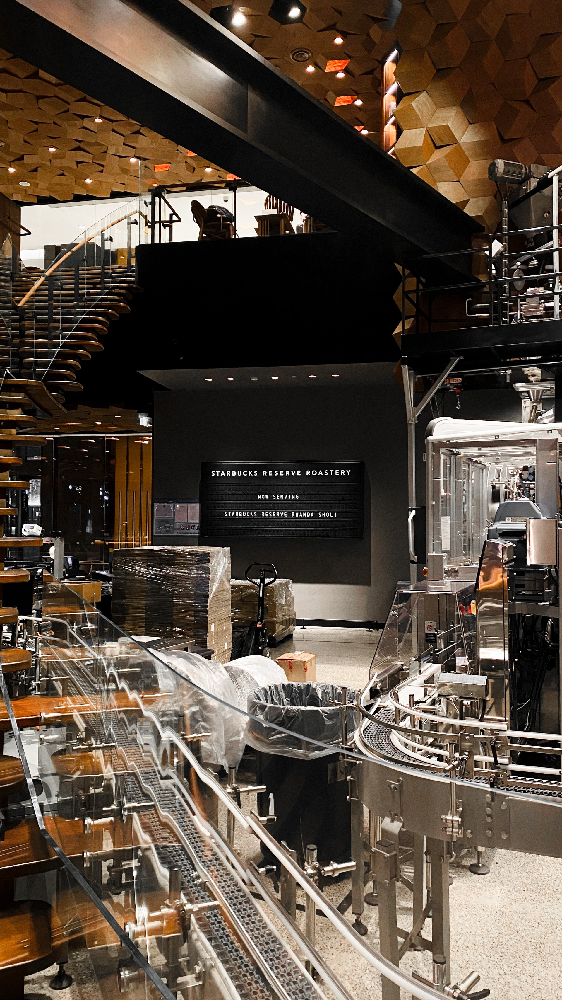
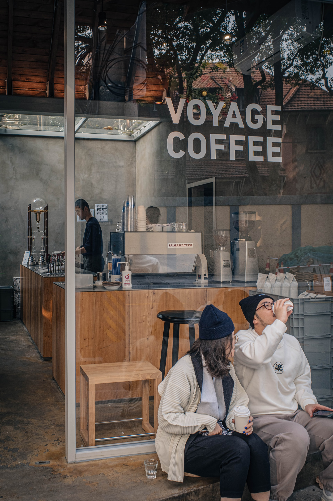
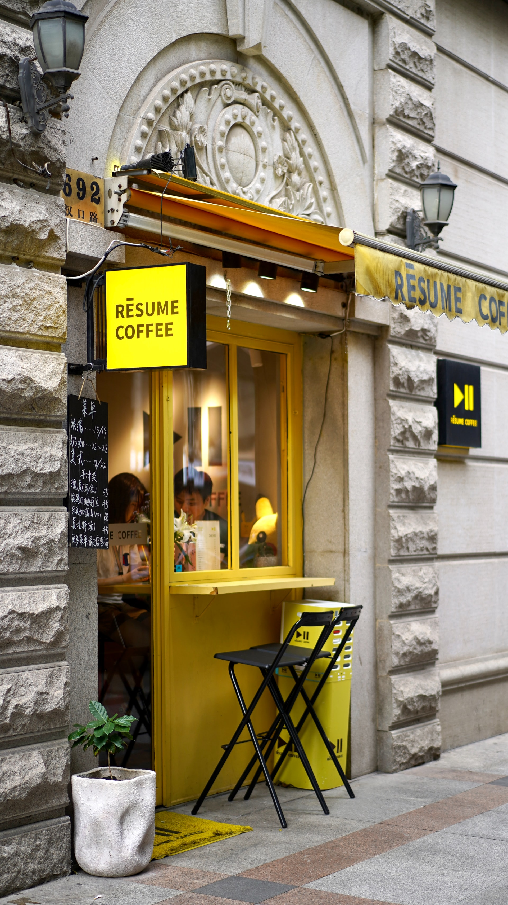
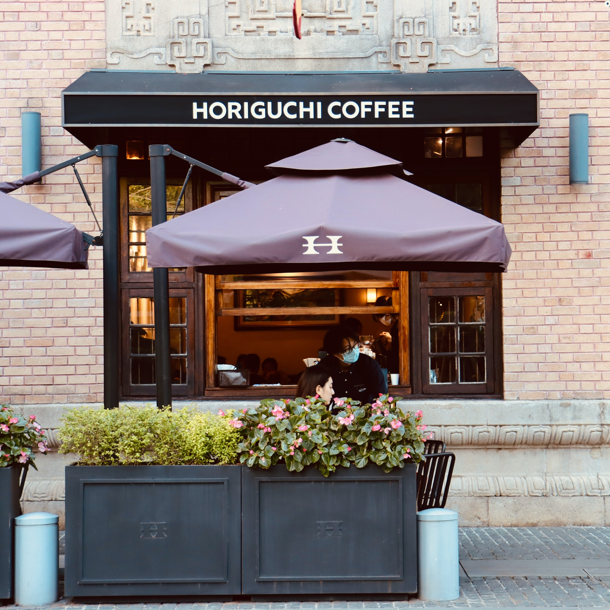

Shanghai is the city with the most coffee shops in the world. According to Shanghai Coffee Consumption Index report published last year, Shanghai has nearly 7,000 coffee shops.
Shanghai Starbucks Reserve Roastery was opened in December 2017. Located on the West Nanjing Road,one of the most famous commercial districts in the city, Shanghai Roastery has become a must-visit attraction for tourists who are coffee lovers.
   